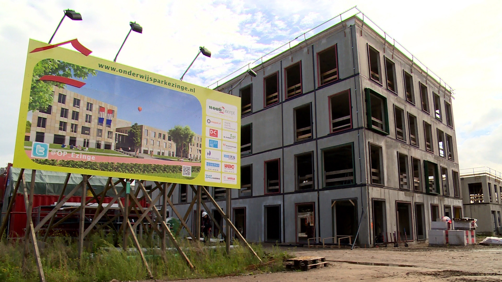

Hackathon@School
Wie zijn we?
Hackathon
Build your own app
Demo
Website
Website
HTML
CSS
Javascript
HTML
Tags
Tags
<h1>
<p>
<ul>
<li>
Image
Image
Video
Video
snowboarding...
Opdracht 1
Maak een eenvoudige webpagina
CSS
Opdracht 2
Maak je webpagina mooier
My Friend Book
Pagina's
Mijn vrienden
Mijn school
Mijn game
Opdracht 3
Maak je vrienden pagina
Javascript
←
→
/
Go to slide: